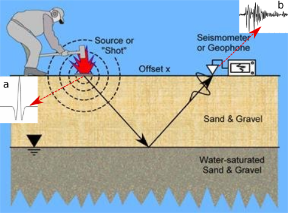
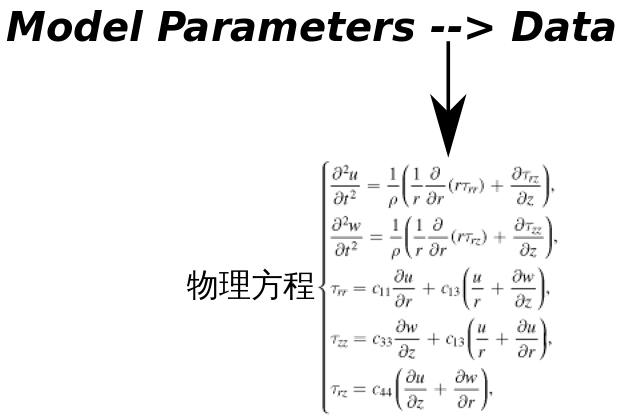
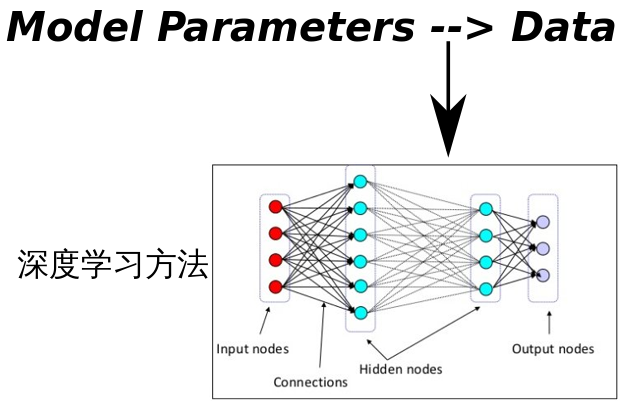

浅谈深度学习算法 -- 能不能学物理定律?
本篇博客以一个物理问题为出发点，试图从数学的角度来理解一下深度学习算法。主要围绕着深度学习算法（未讨论非监督学习）能否学习出物理定律这个问题进行阐述。
先看一个物理问题

如上图所示，使用一个锤子敲击地面，会给地面造成一个冲击力，冲击造成的震源可以大致表示成图中（a）所显示的信号，震源使地面开始震动形成波场，（a）信号随着地面震动而传播，位于远处的检测器（倒三角形所示）感受到检测器所在位置的地面震动，并记录下来就得到了途中（b）所示的信号。这个问题可以简单理解成声音的传播，(a)是声源，经过大地传播之后（滤波作用），使接收声波的一方接收到信号（b）。
显然，不同的地质环境，大地的”材质”也会不同，那么一定会影响到（b）信号的最终形态。这就好像，人在水里说话和在空气中说话听到的声音肯定也会不一样。那么，如何描述材料的性质和接收信号（b）的关系呢？（我们把这一关系表达为以下映射，在物理中称为正演问题）下面给出两种解法。
物理方法
物理学家根据力学定律以及材料的弹性性质、密度等参数推导出和之间有着定量的关系，可以描述成下图的物理方程，有了这个方程，我们就可以建立这两者之间的关系了。

深度学习方法
如今，我们还可以使用深度学习方法建立和之间的定量关系。首先我们建立一个网络架构，比如用几个卷积层、几个全链接层等，每一个神经元还有一组参数通过给定和的数据对，不断的改进神经元的参数，最终在function set里面找到一个相对令人满意的函数，其可以表示和之间的映射关系。

问题的提出和回答
上面给出了两种方法来解这个问题，我们可以看到如果两种方法都能解这个正演问题（深度学习实际上是在从数据反推回模型的过程中逐步给出正演函数的），那么是不是深度学习学习到的模型等价于物理定律呢，换句话说深度学习可以学到物理定律？
这个问题我给它拆成两个：
- 深度学习建立到的映射这件事情能不能做？
肯定能，因为有人已经证明了深度学习算法可以拟合任何复杂的函数，参见Universal approximation theorem。相关问题也可以看看这里神经网络为什么可以拟合任意函数？。也就是说，到的映射再复杂，深度学习也可以给你找个函数来逼近它。 - 建立的映射好不好用？或者说模型的泛化能力会很强吗？
虽说神经网络有万能逼近的性质，但是逼近的好不好就另说了，因为毕竟没有拿所有的数据集去训练，而一个物理问题的数据集几乎可以说是无限大的。那有没有可能深度学习学习出来的模型恰好和物理定律一致呢？那就得把深度学习模型当作一个函数来研究了，看看它是不是化简完恰好就是物理方程，不过，几万甚至上亿个参数的函数，研究起来应该很头疼吧，一般人肯定会疯掉的，所以说这个问题还是交给科学家去解决吧。这里和胡师兄讨论的时候，发现我们的理解基本一致（难道是因为大家都学地球物理的吗…）
其实，一个非线性的物理问题也可以线性化，比如使用泰勒展开就可以做到；从另外一个角度去理解就是转化成的问题。但是，由于数据有限，这里的G存在0空间，所以会有，也就是说有限的数据集几乎是不可能约束的。
其他策略
为了让深度学习学到的模型/函数/映射更加接近”理论事实”，我们可以加一些约束，比如先做特征提取、结合比较好解释的机器学习和深度学习算法来学习出一个泛化能力更强的模型/函数/映射。
小结
深度学习算法一般来说只能学习到数据集中已有的知识，它比较擅长于归纳，而不擅长演绎。对于非监督学习，情况可能比较复杂，暂不讨论。
原文作者: Mun*
原文链接: https://kiddie92.github.io/2019/03/03/浅谈深度学习算法-能不能学物理定律/
许可协议: 知识共享署名-非商业性使用4.0国际许可协议